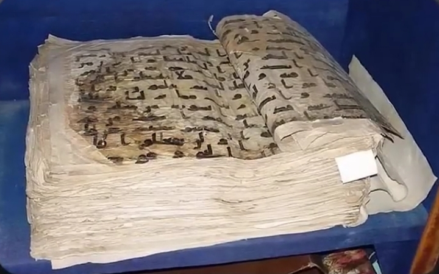
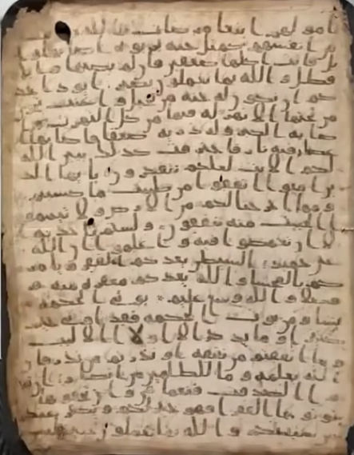
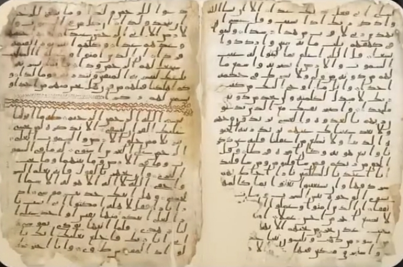

قرآن توپ قاپی نسخه مکتوب از قرن اول هجری، زمان خلافت عثمان بن عفان، که در موزه توپ قاپی ترکیه نگهداری میشود، حاوی ۱۱۴ سوره است و با قرآن امروزی کلمه به کلمه یکسان است. نه کلمهای کم دارد و نه کلمهای اضافه، فقط چند صفحه به خاطر گذر زمان آسیب دیدهاند.
پروفسور گرگور شولر، شرقشناس و پژوهشگر برجسته سوئیسی، در کتاب سنت شفاهی و مکتوب در اسلام میگوید:
قرآن توپ قاپی نسخه کاملی از قرآن است که در زمان خلافت عثمان جمعآوری شده و کاملاً منطبق با قرآن امروزی است.
قرآن سمرقند:
قرآن صنعا:
قرآن بیرمنگام:
همه این نسخهها دقیقاً با قرآنی که امروز در دست مسلمانان است یکی هستند؛ فقط در طول زمان دچار آسیب شدهاند و در برخی نسخهها تنها بخشهایی باقی مانده است.
اینکه بعضی نسخهها ناقص ماندهاند، دلیل بر ناقص بودن کل قرآن نیست. نکته مهم این است که در تمام نسخهها ترتیب سورهها و آیات دقیقاً یکسان است.
اگر قرآن در ۲۰۰ سال اول کامل نبوده، باید اختلاف نسخهای رایج میبود، همانند تورات و انجیل که نسخههای مختلف با تفاوتهای زیاد دارند. اما قرآن در هر نقطه دنیا یکسان است: آیه اول سوره بقره «الم» و آیه آخر سوره ناس «من الجنة والناس». هیچ نسخهای از قرآن کشف نشده که محتوای متفاوتی داشته باشد.
فرانسوا دروش در کتاب تحلیل نسخههای قرآنی میگوید:
دیوید توماس، استاد بازنشسته دانشگاه بیرمنگام، در کتاب کتاب مقدس با قرآن میگوید:
شواهد تاریخی و نسخههای کهن نشان میدهد قرآنی که امروز مسلمانان در دست دارند همان قرآنی است که از قرون اولیه توسط پیامبر اسلام ارائه شده.
پس وقتی نسخهای از قرآن ۱۴۰۰ سال پیش با قرآن امروز دقیقاً یکی است، ادعای نبود قرآن کامل در ۲۰۰ سال اول، چیزی جز یک بازی تبلیغاتی نیست.